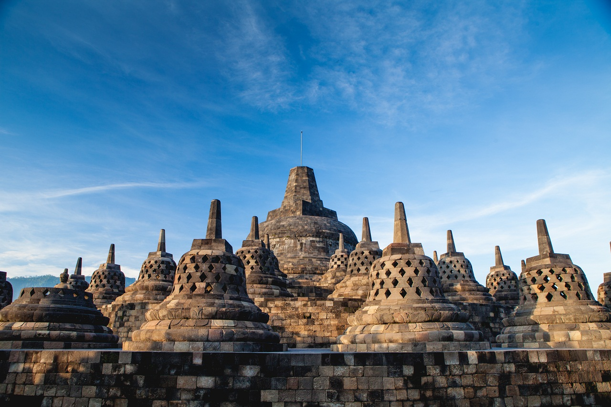
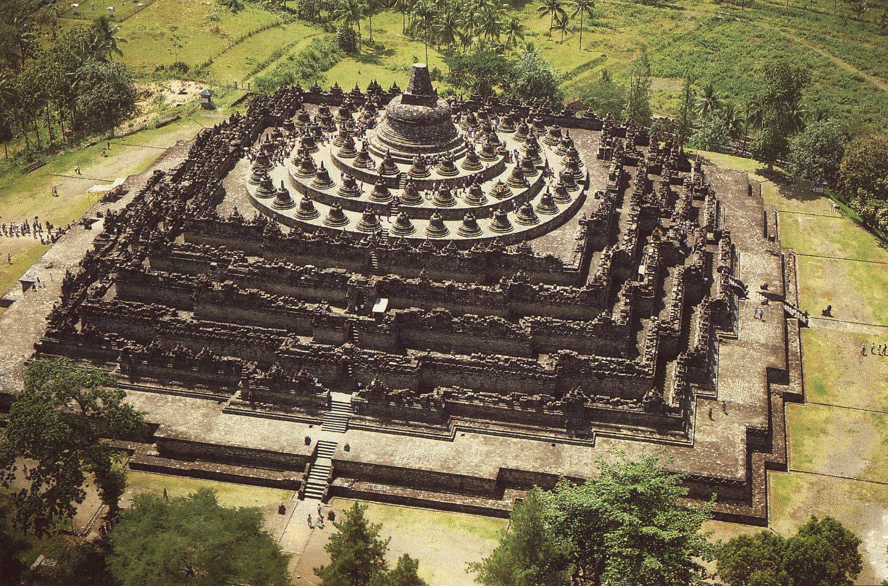

Explanation
Candi borobudur merupakan salah satu monumen atau bangunan umat Buddha terbesar di dunia yang dibangun pada abad ke-8 dan ke-9 Masehi pada masa pemerintahan Dinasti Syailendra, Monumen ini terletak di Lembah Kedu, di bagian selatan provinsi Jawa Tengah, tepatnya di Kabupaten Magelang. Candi dengan luas 2500m persegi ini menyimpan banyak sejarah di dalamnya, bagaimana agama Buddha pernah mencapai puncak kejayaannya selama masa penyebaran agama Buddha di Indonesia. Tak hanya itu, candi ini juga pernah masuk dalam tujuh keajaiban Dunia dan saat ini termasuk dalam salah satu warisan dunia yang dilindungi oleh UNESCO. Ukiran batu yang mengelilingi setiap sudut komplek candi ini seolah melambangkan kekuasaan besar Buddha yang hingga saat ini masih dapat dikenang oleh banyak masyarakat.
Warisan Budaya

Borobudur sebagai salah satu wisata dunia di Indonesia tidak lepas dari peran UNESCO dalam kegiatan restorasi candi. UNESCO juga menetapkan Borobudur sebagai cagar budaya warisan dunia pada 1991. Sampai sat ini Candi Borobudur menjadi salah satu tujuan wisata di Jawa Tengah dan Yogyakarta. Apalagi setelah Borobudur dijadikan salah satu dari tujuh keajabian dunia.
Struktur Candi

Candi Borobudur terletak di sebuah bukit yang memanjang ke arah
timur ke barat. Candi ini terbuat dari batu – batu andesit sebanyak
47.500 m3, yang disusun dengan cara saling mengunci antara satu batu
dan batu lain serta dengan dilapisi putuh vajralepa layaknya candi –
candi seperti Candi Kalasan dan Candi Sari. Terdapat empat tangga
dari empat mata angin yang menghantarkan ke atas candi.
Conclusion
Candi borobudur sebagai salah satu wisata dunia di Indonesia tidak lepas
dari peran UNESCO dalam kegiatan restorasi candi. UNESCO juga
menetapkan Borobudur sebagai cagar budaya warisan dunia pada 1991.
Sampai sat ini Candi Borobudur menjadi salah satu tujuan wisata di
Jawa Tengah dan Yogyakarta. Apalagi setelah Borobudur dijadikan
salah satu dari tujuh keajabian dunia.
berikut adalah data pengunjung candi borobudur 2020-2022
KLIK DI SINI
Data Candi Borobudur
Data pengunjung Candi Borobudur tahun 2020-2022
|
Bulan |
Pengunjung Candi Borobudur |
| 2020 |
2021 |
2022 |
2020 |
2021 |
2022 |
| Januari |
395 175 |
30 394 |
131 561 |
15 603 |
52 |
127 |
| Februari |
234 280 |
18 641 |
89 203 |
11 506 |
37 |
170 |
| Maret |
111 908 |
34 624 |
111 540 |
4 213 |
33 |
348 |
| April |
- |
30 713 |
23 890 |
- |
64 |
618 |
| Mei |
- |
38 369 |
324 135 |
- |
55 |
2 175 |
| Juni |
2 235 |
54 589 |
191 810 |
2 |
70 |
4 341 |
| Juli |
16 858 |
0 |
125 266 |
29 |
0 |
1 184 |
| Agustus |
45 571 |
0 |
51 906 |
39 |
0 |
15 550 |
September |
23 591 |
5 892 |
44 552 |
19 |
9 |
9 853 |
| Oktober |
43 159 |
30 285 |
76 461 |
38 |
93 |
7 688 |
| November |
32 449 |
51 485 |
74 253 |
26 |
106 |
4 941 |
| Desember |
965 699 |
422 930 |
1 443 286 |
31 551 |
674 |
53 936 |